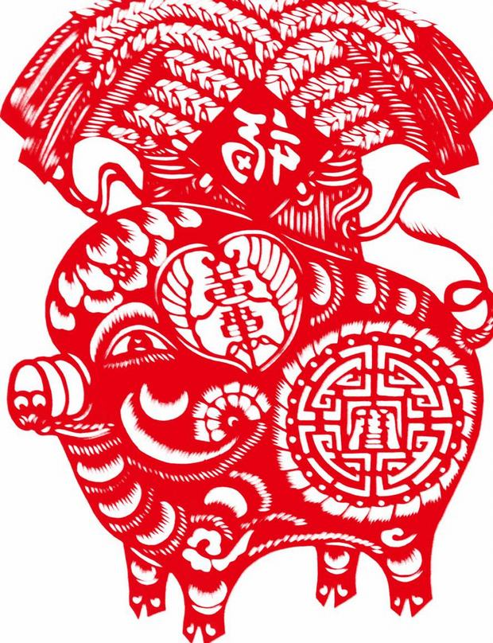

Pig
The Pig's Personality:
Pigs are diligent, compassionate, and generous. They have great concentration: once they set a goal, they will devote all their energy to achieving it. Though Pigs rarely seek help from others, they will not refuse to give others a hand. Pigs never suspect trickery, so they are easily fooled. General speaking, Pigs are relatively calm when facing trouble. No matter how difficult the problems are Pigs encounter, they can handle things properly and carefully. They have a great sense of responsibility to finish what they are engaged in.
The Best Careers for Pigs
Pigs enjoy fine fortune in their careers. Their work and cause develop in a relatively smooth way. When encountering trouble and difficulties, Pigs tend to receive help from others. With a great sense of responsibility, Pigs are not afraid to try to do what they are interested in, and Pigs have rich creativity and imagination. In social relationships, they should build up their own interpersonal network to help them achieve career success.
They thrive as entertainers, caterers, doctors, veterinarians, and interior decorators. Promising career fields include transportation, entertainment, retail and hospitality.
The Luckiest Things for Pigs
- Lucky numbers: 2, 5, 8, and numbers containing them (like 25 and 58)
- Lucky days: the 17th and 24th of every Chinese lunar month
- Lucky colors: yellow, gray, brown, gold
- Lucky flowers: hydrangea and daisy
- Lucky direction: east and southwest
- Lucky months: the 2nd, 7th, 10th, and 11th Chinese lunar months
Source: chinahighlights.com